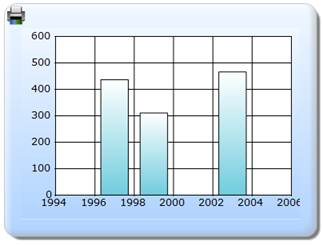

The steps to enable the printing feature in a chart through ChartModel are as follows:
Step 1:
View:
Add the code displayed below in the aspx file.
View [ASPX]
<%--Rendering the Chart Control--%>
<%= Html.Chart("ChartModel",(MVCChartModel)ViewData["ChartModel"]) %>
View [cshtml]
@*--Rendering the Chart Control--*@
@(new HtmlString (Html.Chart("ChartModel",(MVCChartModel)ViewData["ChartModel"]).ToString()))
Step 2:
Controller:
Add the code displayed below in the Controller. The printing functionality can be enabled by using the PrintButtonVisible property. Also, the Print button can be draggable. This can be enabled by using the PrintButtonDraggable property. The ChartParams class is used to get the post parameter values. For this, the ChartParams class is used as a parameter in the post action method and passed as a parameter to the ChartActionResult method, to print the chart.
public ActionResult Index()
{
MVCChartModel chartModel = new MVCChartModel();
InitializeChart(chartModel);
ViewData["ChartModel"] = chartModel;
return View();
}
[AcceptVerbs(HttpVerbs.Post)]
public ActionResult Index(MVCChartModel chartModel, ChartParams ChartParamsData)
{
InitializeChart(chartModel);
return chartModel.ChartActionResult(ChartParamsData);
}
void InitializeChart(MVCChartModel chartModel)
{
//Enabling the print button
chartModel.PrintButtonVisible = true;
//enabling the drag functionality of the print button
chartModel.PrintButtonDraggable = true;
ChartSeries series;
series = new ChartSeries("Saab", ChartSeriesType.Column);
series.Text = series.Name;
series.Points.Add(1997, 437);
series.Points.Add(1999, 311);
series.Points.Add(2003, 466);
chartModel.Series.Add(series);
chartModel.BorderAppearance.SkinStyle = ChartBorderSkinStyle.Emboss;
chartModel.Skins = ChartModelSkins.Office2007Blue;
chartModel.ChartSeriesSkins = ChartSeriesSkins.DefaultAlpha;
}
Step 3:
Run the code, to get the following output:

Figure 348: Chart with Print button
Step 4:
Double-click the Print button, to print the chart.